Note: All "Once Per Mission" effects only work once time per mission and only once per day. Conducting multiple missions in the same 24 hour period does not reset the ability.
Janiven
Chelish Ranger 6
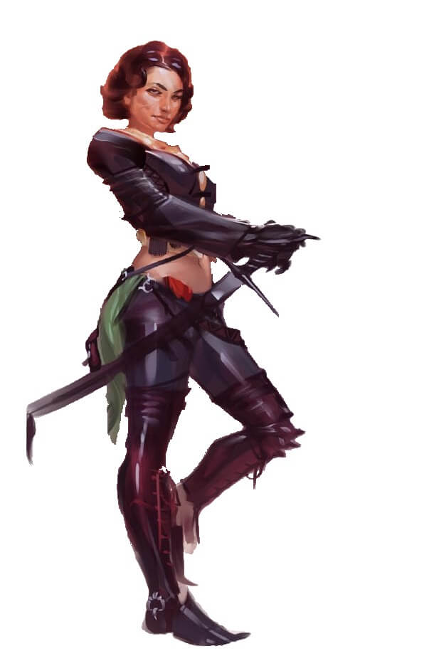
Description: Janiven is an attractive woman who downplays her beauty by wearing rough clothing and armor and adopting a generally stern and no-nonsense attitude. Yet when she feels truly at ease with someone she calls a friend, her smile, sense of humor, and quick wit reveal her to be quite a charming and friendly woman. She’s known Arael for almost a year now, and has come to think of him as an older brother, and while she respects him greatly and approves of his dream to see Cheliax fall under the guidance of Iomedae, her own faith in Desna has often resulted in lingering arguments about when it is appropriate to toss aside the law of the land in order to ensure the freedom and safety of the citizens.
Awakened Role: Founder - Responsible for the recruitment, creation, and mission of the group, Janiven is ultimately responsible for both its existence, and the survival of its members.
Boon: Janiven coordinates group efforts, plans missions, directs agents, and makes contacts. Despite her paranoia, she is very discerning and has a key intuition as to how useful someone might be, allowing her to find and bring in potential recruits.
Light Level: Clear
Arael
Half-Elf Cleric of Iomedae 6
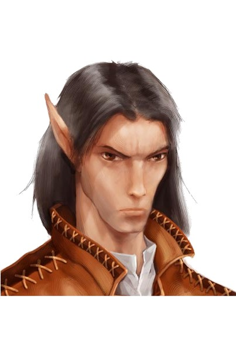
Description: Arael is a handsome man whose family has long lived in Westcrown. He wants nothing more than to see the House of Thrune toppled, but knows that this is a long-term goal at best, and has set his sights, for now, on what he feels is a much more realistic goal—making Westcrown a nicer place to live. His frustrations with the government of Westcrown aren’t that they are pawns of the House of Thrune, but that they don’t do more to make their city a better place to live at the same time. He hopes that by founding a group of do-gooders, if not outright “people’s heroes”, he can show the city’s rulers a better way.
Awakened Role: Sanctuary - A crafter, counselor, and spiritual adviser, Arael attempts to tend to the spiritual and emotional needs of the group, while providing a safe space to live and meet.
Boon: Arael effectively administrates the shrine and ministers to its inhabitants and parishioners, providing a place where members may rest, heal, eat, train, have legal shelter, and recover from afflictions. He also provides spellcasting and potions services at cost.
Light Level: Clear
Amaya Kaijitsu
Tian Detective Bard 3
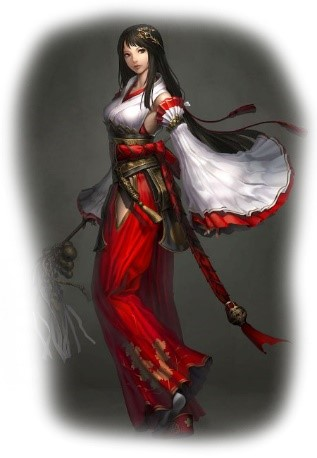
Description: Amaya is a well-mannered glassblower and an incredibly beautiful woman who is somewhat self-conscious about the effect her appearance has on others – she dresses plainly as a result. She hopes someday to visit her distant kin who still live in Magnimar and Sandpoint.
Awakened Role: Amaya’s magic specializes in communication and retrieval. Combined with her knowledge of the city and its nobility, she can quickly get messages and equipment back and forth between the Children of Westcrown’s members.
Lesser Boon: Amaya can be used to bring needed items or gear to the party while on a mission. Once per mission, the party can send a mental request to Amaya to fetch gear (up to 500gp in value) for them from the city. This takes 1 hour to accomplish. If the party returns to the fall-back point after this time, it will be waiting for them there, though Amaya will expect to be reimbursed upon delivery.
Greater Boon: As above, except she can secure gear valued up to 1,000 GP per level and it only takes 10 minutes. In addition, she can safely secure gear up to 100lbs of gear/loot and can recover incapacitated or dead allies or their remains if they are brought to a fall-back point. Once per mission per day, she can smuggle one item weighing 1lb per level or less to the PC's during combat (acts on initiative 0). This can be any item she can normally bring as part of a "prearranged contingency." The cost of this item counts against her daily limit.
Light Level: Normal
Ermolos the Younger
Chelish Armor Master Fighter 4

Description: Ermolos is incredibly muscular, a physique the result of a long apprenticeship as a blacksmith. He walks with a slight limp – a lingering effect of a childhood illness. His father and namesake was an adventurer who vanished on an ill-fated journey to Thuvia several years ago — Ermolos still clings to the hope to someday travel across the Inner Sea to find him.
Awakened Role: Master of Arms - Ermolos's blacksmith training allows him to adjust and enhance the metal of his allies.
Lesser Boon: Ermolos can improve the PC's armor, reducing the armor check penalty by 1 and granting the armor the fitted armor modification. This takes 1 hour for light armor, 4 hours for medium armor, and 8 hours for heavy armor, and the benefit only applies to the person fitted for the person fitted for the armor, though other creatures may wear the armor normally. In adition, Ermolos can also attach armor attachments (such as armor spikes) for only the price difference and can size down armor one size category for free, using the same time rules as above. Ermolos is not skilled enough to adjust magical armor with an enhancement cost greater than +2. He is only familiar with metal, wood, and leather and cannot make modifications to items made from special materials.
Greater Boon: By working with his coworkers at Baradin’s Forgeworks, Ermolos can grant all the PC’s armor the fitted armor modification overnight. He can also attach weapon attachments or size armor up one size category for the cost of materials. He can also overnight rush a custom order for weapons or armor which may be made of almost any special material and can be enchanted with up to a +2 bonus, though any rush orders must be purchased at full price. Ermolos has become familiar with most weapon and armor materials and can also adjust most magical weapons and armor, though he has no ability to add or modify enchantments himself.
Light Level: Bright
Fiosa
Halfling Cleric of Iomedae 4

Description: Fiosa is a house servant who is friends with many halfling slaves; she takes advantage of her freedom to help her kin as best she can. She has a very real respect for Janiven and Arael after they helped her smuggle several halfing slaves out of Westcrown, and a growing respect for religion in general.
Awakened Role: The Medic - Fiosa is a skilled healer, even without her magic, and is a major help when treating diseases or poisons
Lesser Boon: Her preparation for missions allows one PC to re-roll a failed fortitude save to resist the effects of a poison or disease once per mission. This may be done after the result of the roll is revealed, though they must take the second result.
Greater Boon: Her improved preparation allows each PC and NPC on the mission may re-roll a failed fortitude save and take the higher result once per mission. This may be done after the result of the roll is revealed. In addition, she can arrange for castings of raise dead at the cost of materials so long as the body can be safely recovered.
Light Level: Bright
Gorvio Hellskillar
Chelish Dragon-Blooded Sorcerer 2
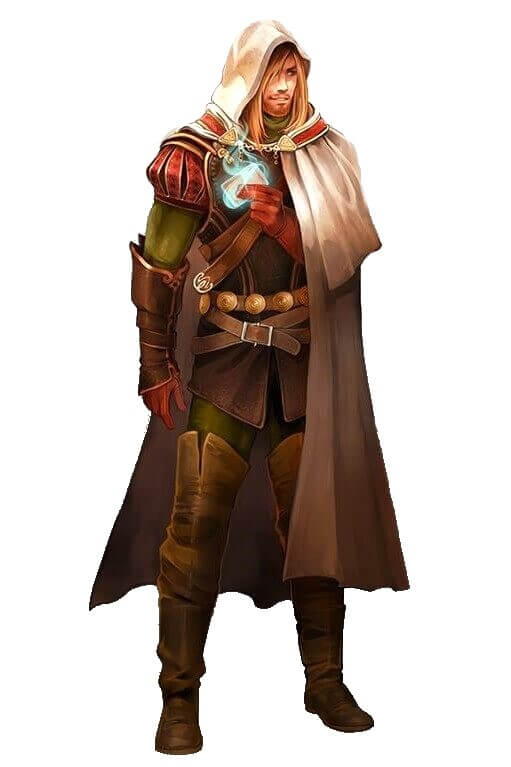
Description: Gorvio is a young man who works for his uncle Jacavo, a horse trader. He dresses conservatively and has strangely bright, amber eyes. He has grown curious over his ancestry and suspects that somewhere in his lineage lurks the blood of a tiefling.
Awakened Role: The Enforcer: Gorvio has the blood of dragons flowing through him, despite what he previously thought of as a tiefling heritage. He becomes bold and intimidating, using his newfound powers to inspire respect and fear in equal measure.
Lesser Boon: Gorvio’s intimidating presence grants the PCs a +2 bonus to all Intimidate checks during a mission.
Greater Boon: Unknown
Light Level: Dim
Larko
Garundi Urban Ranger 3

Description: Larko lives a simple life as a dock worker, but daydreams of his childhood in the hills east of Westcrown. If he ever saves up the money, he hopes to move out of the city and live the quiet life. He’s the strong, silent type, rarely speaking.
Awakened Role: The Guard - Larko finds that he does best when defending an area, and is most comfortable keeping an eye on things at the safe house. When out in the field, his training and warnings keep the party's eyes sharp.
Lesser Boon: Larko’s training grants the PCs a +2 bonus on Perception checks to avoid being surprised.
Greater Boon: Larko’s exceptional training instead grants a +2 bonus on all perception checks and grants a +2 to initiative checks when acting in a surprise round. When guarding an area, allies always get a surprise round if attacked, while enemies never get a surprise round to ambush.
Light Level: Normal
Mathalen Manoses
Chelish Monk 3
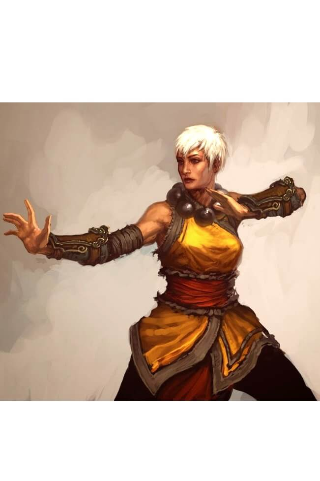
Description: Mathalen is a thin and wiry woman who worked as a porter but found the job dreadfully dull. She frequently takes breaks to meditate and purge her mind of what she calls “the poisons of menial labor”.
Awakened Role: The Scout - Mathalen is peerless when it comes to moving around the rooftops of westcrown or sneaking along its alleyways.
Lesser Boon: Mathalen can scout out the outdoor areas of a mission location being investigated, giving them an outline of the layout, warnings about visible outdoor threats, and other such material. She only relays very basic details which are not always exact - Mathalen is still learning.
Greater Boon: Unknown
Light Level: Normal
Rizzardo
Varisian Superstitious Barbarian 3

Description: After stowing away on a Chelish ship, Rizzardo found himself more-or-less-stuck in Westcrown years ago. He earns his keep working odd jobs, but switches jobs frequently as a result of his quick temper. He only joined because of a powerful attraction to Janiven, but has since grown to enjoy the company of the others, particularly Ermolos, who he insists sounds just like his little brother.
Awakened Role: The Shock Trooper: Rizzardo takes his role quite literally. The inconspicuous nature of his spiked chain weapons and armor hidden beneath a coat allows him to walk quite easily into the midst of his enemies before he removes his coat, reveals the true nature of his weapon, and creates havoc.
Lesser Boon: Rizzardo grants himself and all allies a +2 bonus to Initiative if they act in the surprise round.
Greater Boon: Unknown
Light Level: Normal
Sclavo
Garundi Paladin of Iomedae 4
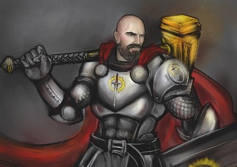
Description: A soft-spoken man and private follower of Iomedae, Sclavo has long worked as a scribe for one of Westcrown’s courts and has a working knowledge of Chelish Law. He longs for a day when the laws of Cheliax can be reformed and sees this group as the perfect means to that end.
Awakened Role: The Face – Sclavo speaks softly, but his words carry with them great weight. An expert at dealing with people, he finds himself speaking with the majority of Westcrown, quietly comforting civilians who have lost something or assuring others that his group will help them.
Lesser Boon: Sclavo grants the PCs a +2 circumstance bonus to all Diplomacy checks.
Greater Boon: Sclavo’s improved reputation now grants a +4 bonus to Diplomacy checks. In addition, once per mission when the PCs are interacting with a legal official, they may roll diplomacy/ fame twice and take the higher result.
Light Level: Bright
Tarvi Miani
Chelish Illusionist Wizard 3
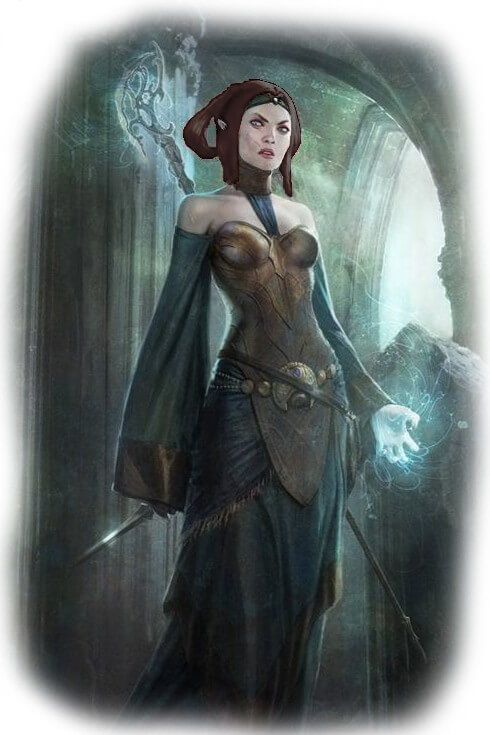
Description: Tarvi’s parents own a prosperous jewelry store in Westcrown – the “Glitter Palace.” She’s worked there for years, but is far too witty and intelligent to do the job well. Having successfully sabotaged no less than a dozen attempts of her parents to marry her off to nobility, she clings to time for her true passion – the study of magic. Caring little for romance, she hopes to someday have the skills to create and sell magical jewelry.
Awakened Role: The Spy - Tarvi mizes her expertise with illusions with a specialty in enchantments, allowing her to disguise herself as various people while charming and infiltrating enemy encampments.
Lesser Boon: Tarvi can scout out the first few indoor areas of a mission area safely (roll 1d3 to determine number of rooms). She can use this information to relay an outline of the layout, provide a warning about visible indoor threats, and other such material. The details are very basic and not always exact - Tarvi is still inexperienced and does not have many spells. She may only do this once per mission.
Greater Boon: Unknown
Light Level: Normal
Vitti Vinni
Chelish Cave Druid 4
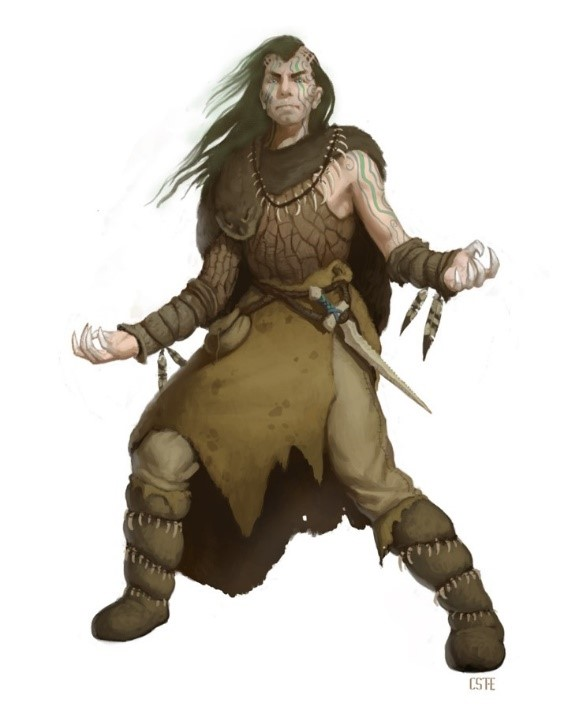
Description: Vitti is a strange, eccentric man who dyes his hair green and refuses to eat any food he doesn’t grow or catch himself. A talented woodcarver whose works earn him a modest income, he prides himself on the fact that he only carves on wood that’s been harvest from deadfalls and other trees that died of natural causes.
Awakened Role: Tunnel Rat – There has never been much nature in Westcrown, leaving Vitti to commune with nature in an unlikely place: the sewers. He tames and trains a crocodile named Leatherhead to accompany him and grows the most familiar with Westcrown’s underground out of all the NPCs.
Lesser Boon: Vitti grants all PCs Favored Terrain +2 when in the sewers, as per the Ranger ability. In adition, Vitti can guide the party through the sewers. While acting as guide, Vitti cannot get lost and can avoid hostile encounters with creatures with the same number of HD or less than himself.
Greater Boon: As above, except the Favored Terrain bonus increases to +4. In addition, Vitti can plan out, mark, and protect escape routes via the underground sewers, if given an hour to prepare and the PCs can make it safely to the designated sewer entrance on their own. These routes will have no hostile encounters.
Light Level: Bright
Yakopulio
Gnome Smuggler Rogue 2
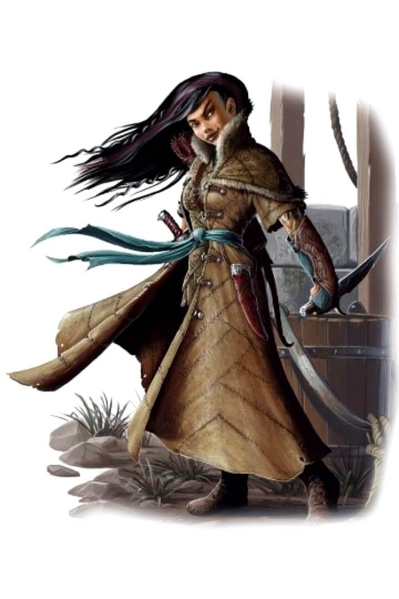
Description: Of all the members, Yakopulio is the least religious – she wears her atheism proudly and her eagerness to contradict often sparks arguments amongst the others in the group. She works as a bartender (and moonlights as a pimp) at a tavern called the Bruised Eel. Most of the others don’t understand what Arael sees in the offensive gnome or what she brings to the table.
Awakened Role: The Fence: Yakopulio makes use of her underworld connections to sell a lot of the gains that the PCs come across, often buying many of the items they wish to get rid of.
Lesser Boon: Yakopulio grants PCs a +2 bonus to all Appraise and Sleight of Hand checks. In addition, she can find a buyer for items (mundane, magical, or hot) worth 2000 GP or less. This takes one day.
Greater Boon: As above, except the bonus increases to +4. In addition, she can buy and sell most items worth 10,000 GP or less, if their available in Westcrown’s underground. This takes one day. Once per day, she can network her contacts to find a specific item within her purchase value within 1 minute. This item can be transported to a fallback point or to Amaya freely.
Light Level: Dim
Mortilda Adams
Tiefling Witch 4
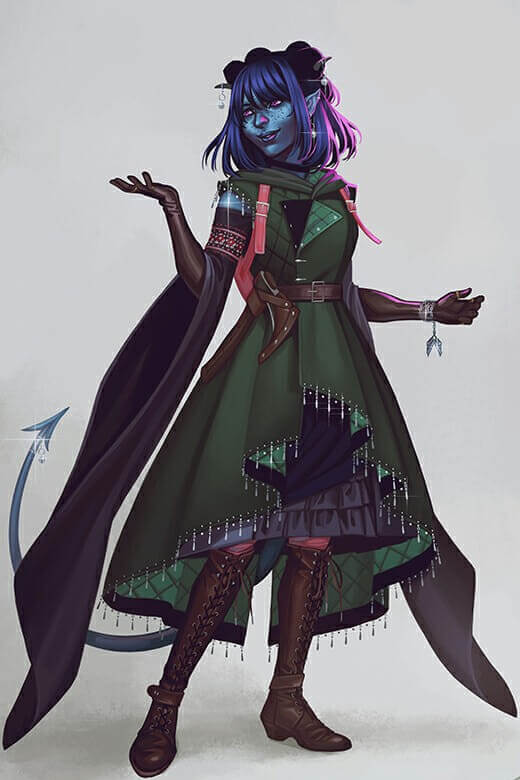
Description: This Infernal Bastard librarian was born an only child into a lower class family, her parents did everything they could to give her the best life possible. After an unfortunate work accident involving non-existent safety standards killing her father, her mother shut down. Her mother died shorty after to alcohol poisoning, leaving Mortilda alone as a teen on the streets. After weeks wandering and looking for a purpose, she entered a library. Looking around for a while led her to dark corner of the library where she heard the mew of a kitten. Beneath what was to become her new best friend was a book containing otherwordly knowledge, sparking an insatiable craving for more. Mortilda now spends her days working as a librarian searching for any more information on the contents of that book.
Awakened Role: Accursed Hexer - Mortilda's magical knack lies in jinxing the opposition, forcing their fortunes to crumble as luck seems to leave their side. With her arsenal of spells, hexes, curses, and tricks, she seeks ways to shift the odds.
Lesser Boon: Mortilda's preparation and jinxes shifts the odds in the party's favor, allowing them to force an enemy to reroll their attack roll once per mission and take the second result.
Greater Boon: Unknown
Light Level: Bright
Calseinica Nymmis
Bard 3 Aristocrat 2
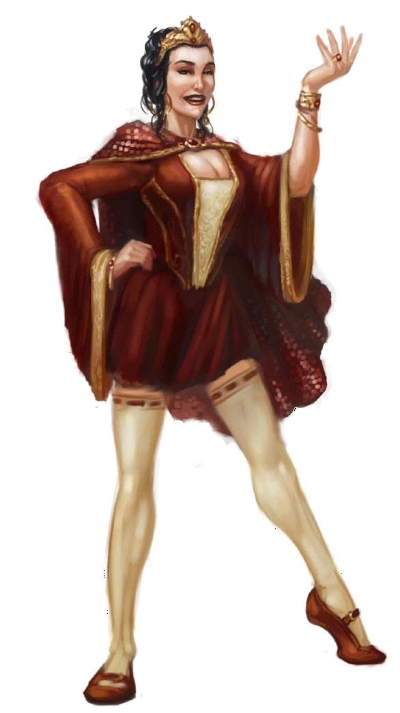
Description: A young aristocrat's daughter disowned for her scandalous lifestyle choice to move to Westcrown and act, she is still somewhat naive about the realities of her profession. A pretty young thing still overwhelmed with the fact she's somehow living her dream, her talent is pure and her exuberance infectious. She's smart enough to recognise Thesing for the trouble he is, and trusts her friend Aulamaxa and the director Robahl to protect her if necessary.
Awakened Role: Rising Starlet - A natural talent and untrained actress, Calseinica served as the understudy to Visbaronetess Aulamaxa when she was injured in a carriage accident, forcing Calseinica to take to the stage in her stead at a production of the popular The Winter of White Roses. Her portrayal took Westcrown's critics by storm, and she retained the roll in all future performances by that director. Everyone now excitedly awaits her next appearances.
Lesser Boon: While she is performing, she grants a +2 morale bonus on craft, perform, and profession checks.
Greater Boon: Unknown
Light Level: Bright
Millech "The Hump"
Illusionist Wizard 3
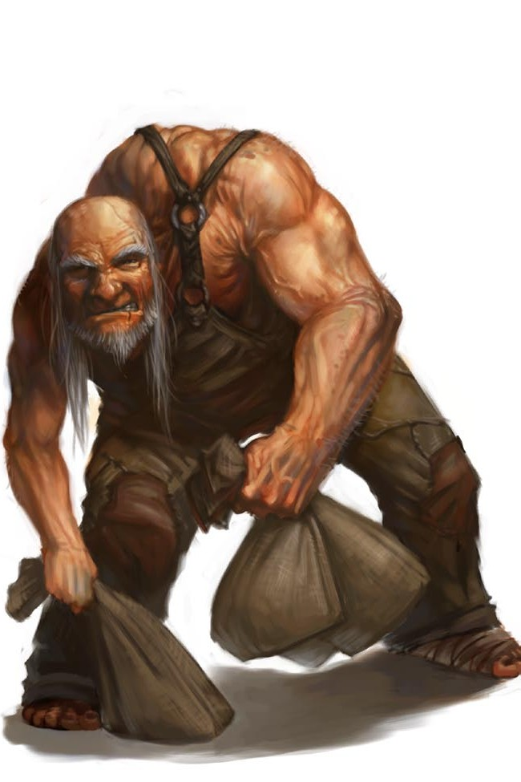
Description: A stocky hunchbacked man with stringy white hair, Millech was born deformed. Exceptionally tricky, stealthy, and a talented illusionist, Millech has worked as backstage support on nearly all of Robahl's plays, with the two developing the uncanny ability to anticipate the needs and wants of the other that only comes with a decades-long working relationship.
Awakened Role: Rigging Master - A talented special effects coordinator, set designer, and rigging master, millech is in the limelight because he has worked with Robahl Nonon for years.
Lesser Boon: Millech provides spellcasting services free of charge and can always keep one item smaller than himself concealed while it is not being wielded or worn.
Greater Boon: Unknown
Light Level: Normal
Robahl Nonon
Human Expert 6
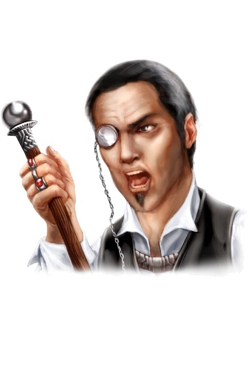
Description: A man so short and stout he could pass for a dwarf Robahl has a frighful frown. The toupee he wears is sadly obvious, as is the faded color of his once fine attire. A minor noble and former military captain, he sees himself as a professional shouter and delights in his fruitful and color use of language while never betraying paucity in his vocaularity with profanity. His face and neck turn increasingly crimson as his anger builds and becomes a tirade, and he has been known to run out of breath while abusing an actor. Legend has it that he once railed against the great elven actor Lobbero for so long that the director passed out, leaving the still standing Lobbero speechless for the only time in his life.
Awakened Role: Infamous Director - A talented - if tyranical - director, Robahl Nonon is the owner of the Limehouse Theater and a relatively infamous director known for his temper and his knack for getting performances out of his actors - at least those who don't run in shameful tears from the stage.
Lesser Boon: Robahl grants a +4 morale bonus on all perform checks while he is directing the action. This requires the character performing to be within both sight and sound of Robahl.
Greater Boon: Unknown
Light Level: Clear